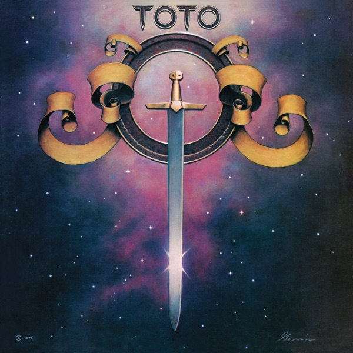

Toto
Toto
Upgrade idea: The original Terre Haute / Mastering Lab pressing is well-regarded and the `2E` stamper is a mid-run copy — plays fine but earlier stampers (2A, 2B) are preferred by collectors. No definitive audiophile reissue exists for this album; the original US pressing remains the go-to for the best sound.
Production notes
Tracklist (Discogs)
| A1 | Child's Anthem | 2:45 |
| A2 | I'll Supply The Love | 3:45 |
| A3 | Georgy Porgy | 4:08 |
| A4 | Manuela Run | 3:55 |
| A5 | You Are The Flower | 4:17 |
| B1 | Girl Goodbye | 6:13 |
| B2 | Takin' It Back | 3:46 |
| B3 | Rockmaker | 3:19 |
| B4 | Hold The Line | 3:56 |
| B5 | Angela | 4:44 |
Tracklist (Apple Music)
| 1 | Child's Anthem | 2:45 |
| 2 | I'll Supply the Love | 3:44 |
| 3 | Georgy Porgy | 4:07 |
| 4 | Manuela Run | 3:54 |
| 5 | You Are the Flower | 4:46 |
| 6 | Girl Goodbye | 6:13 |
| 7 | Takin' It Back | 3:45 |
| 8 | Rockmaker | 3:18 |
| 9 | Hold the Line | 3:55 |
| 10 | Angela | 5:30 |
Personnel & credits
- David Hungate — Bass
- Jeff Porcaro — Drums, Percussion
- Tom Knox — Engineer, Mixed By
- Steve Lukather — Guitar, Vocals
- David Paich — Keyboards, Vocals
- Steve Porcaro — Keyboards, Vocals
- Mike Reese — Mastered By
- Ron Hitchcock — Mastered By
- Toto — Producer
- Dana Latham — Recorded By
- Gabe Veltri — Recorded By
- Bobby Kimball — Vocals
Identifiers
- Matrix / Runout: AL 35317 (Side A label)
- Matrix / Runout: BL 35317 (Side B label)
- Matrix / Runout: o T1 PAL-35317-3J TML-M (Side A, etched, variant 3)
- Matrix / Runout: o T1 PBL-35317-3K TML-S (Side B, etched, variant 3)
- Matrix / Runout: ο T1 PAL-35317-3K TML-S A6 (Side A, etched, variant 4)
- Matrix / Runout: ο T1 PBL-35317-3E TML-M AA (Side B, etched, variant 4)
- Matrix / Runout: ο T1 PAL-35317-3E TML-M B (Side A, etched, variant 5)
- Matrix / Runout: o T1 PBL-35317-3J TML-M G (Side B, etched, variant 5)
- Matrix / Runout: ο T1 PAL-35317 2E TML-S B3 (Side A, etched, variant 6)
- Matrix / Runout: o T1 PBL-35317 2E TML-S (Side B, etched, variant 6)
- Matrix / Runout: o T1 PAL-35317 2F TML-M RL (Side A, etched, variant 7)
- Matrix / Runout: o T1 PBL-35317-3E TML-M D3 (Side B, etched, variant 7)
- Matrix / Runout: o T1 PAL-35317-3J TML-M H17 (Side A, etched, variant 8)
- Matrix / Runout: o T1 PBL-35317-3F TML-S A8 (Side B, etched, variant 8)
- Matrix / Runout: o T1 PAL-35317-3J TML-M IIII (Side A, etched, variant 9)
- Matrix / Runout: o T1 PAL-35317-3AD TML-M B (Side B, etched, variant 9)
Notes
"T" in runouts denotes a [l403953] pressing. "TML-M" or "TML-S" in runouts is stamped.
Notes & discrepancies
- Total runtime differs by 69s (Discogs=2448s, Apple Music=2517s) — likely a different master/remaster.
Toto is the self-titled debut album by Toto, released in October 1978 on Columbia Records. The band was an assemblage of Los Angeles’s top session musicians — David Paich (keyboards, vocals), Steve Lukather (guitar, vocals), Bobby Kimball (lead vocals), David Hungate (bass), Jeff Porcaro (drums), and Steve Porcaro (keyboards) — who had collectively played on hundreds of major recordings before forming the group. The debut is a showcase for that collective virtuosity: tightly arranged, impeccably performed AOR with a melodic sophistication that set it apart from its contemporaries. “Hold the Line” reached #5 on the Billboard Hot 100 and became one of the defining rock singles of 1978; “Georgy Porgy” (featuring Cheryl Lynn on backing vocals) is a silky soul-pop gem that remains a fan favorite. The album reached #9 on the Billboard 200 and went platinum.
Produced by the band themselves, with engineering by Tom Knox and recording by Dana Latham and Gabe Veltri, the album was mastered by Mike Reese and Ron Hitchcock at The Mastering Lab (TML) in Hollywood — one of the most respected mastering facilities of the era, responsible for countless landmark late-1970s and early-1980s rock and pop records.
This 1978 original US pressing was cut at The Mastering Lab (
TML-Sin the deadwax — the-Ssuffix denoting the Side A lacquer engineer’s initials) and pressed at the Columbia Records Pressing Plant in Terre Haute, Indiana (T1in the deadwax). The matrixPAL 35317 2Eidentifies this as a second-lacquer-generation (2),Estamper pressing — a mid-run copy from the original release.About this 1978 US pressing (Vinyl, LP): Columbia catalog JC 35317, original 1978 US pressing. Terre Haute pressing plant. Mastered at The Mastering Lab. Matrix PAL 35317 2E TML-S / PBL 35317 (Side B). No barcode — predates UPC adoption on Columbia LPs.